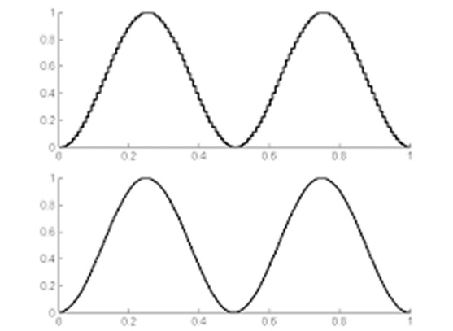
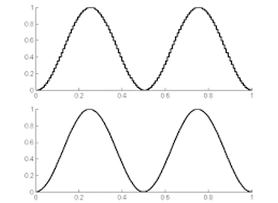

Introducción
El modelo matemático de una señal permite representarla mediante expresiones matemáticas para su análisis y procesamiento. Oppenheim afirma que esta representación es fundamental en el estudio de señales y sistemas.
Desarrollo
Las señales pueden representarse como funciones del tiempo o de la frecuencia, lo que permite analizar características como amplitud, frecuencia y fase. Haykin y Lathi destacan que estos modelos facilitan el diseño de filtros, sistemas de modulación y técnicas de transmisión eficientes.
 

Conclusión
En conclusión, el modelo matemático de una señal es una herramienta esencial para comprender y optimizar los sistemas de comunicación modernos.